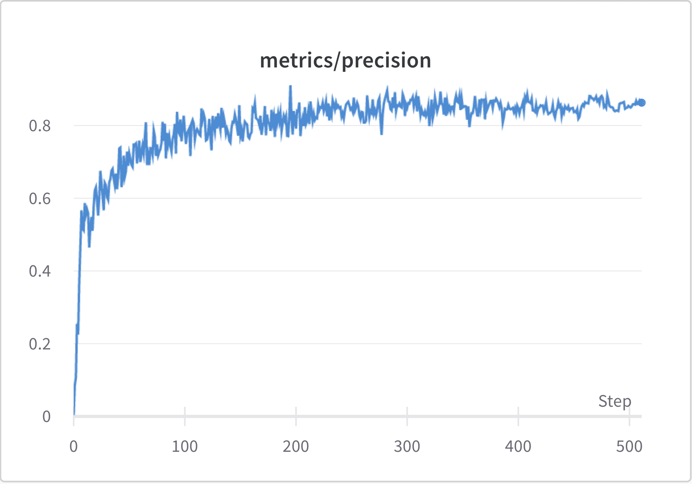

Precision Line Graph
This line graph represents the number of correct positive predictions made out of all positive predictions that could have been made, during each epoch. The best results occurred at epoch 410 and since the model performance didn't improve in the next 100 epochs, it early-stopped at epoch 510